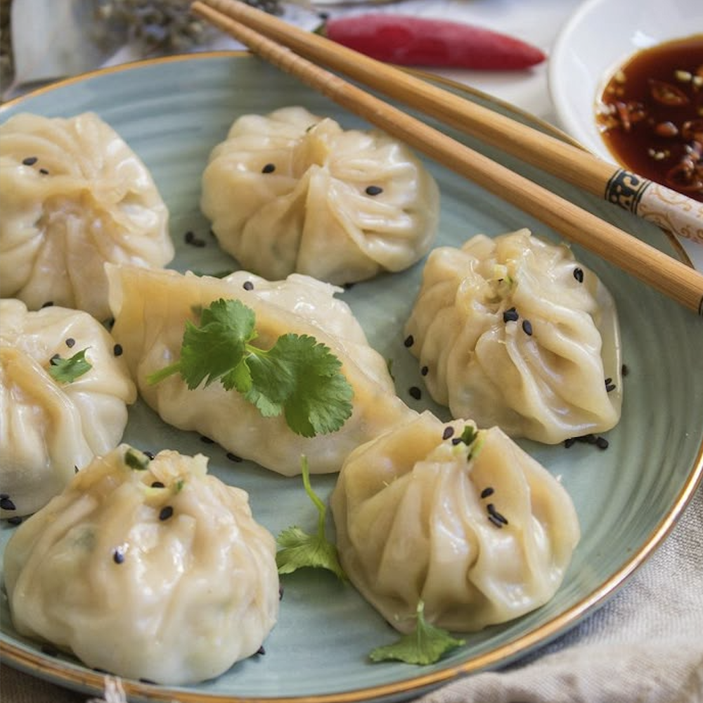

Chicken Spinach Dumplings

Ingredients:
- 1/2 pound (225g) ground chicken
- 1 cup fresh spinach, finely chopped
- 2 green onions, finely chopped
- 2 cloves garlic, minced
- 1 tablespoon fresh ginger, grated
- 2 tablespoons soy sauce
- 1 tablespoon sesame oil
- 1 tablespoon cornstarch
- 1/2 teaspoon salt
- 1/4 teaspoon black pepper
- 30–35 round dumpling wrappers
- Water, for sealing dumplings
- Vegetable oil, for cooking
- Black sesame seeds and chopped cilantro, for garnish (optional)
- Soy sauce or dipping sauce, for serving
Instructions:
- Mix chicken, spinach, green onions, garlic, ginger, soy sauce, sesame oil, cornstarch, salt, and pepper in a bowl.
- Place a spoonful of filling in each dumpling wrapper. Moisten edges with water, fold, and seal.
- Heat oil in a skillet. Add dumplings and cook until bottoms are golden.
- Add a splash of water, cover, and steam until cooked through.
- Serve with soy sauce or dipping sauce. Garnish with sesame seeds and cilantro if desired.